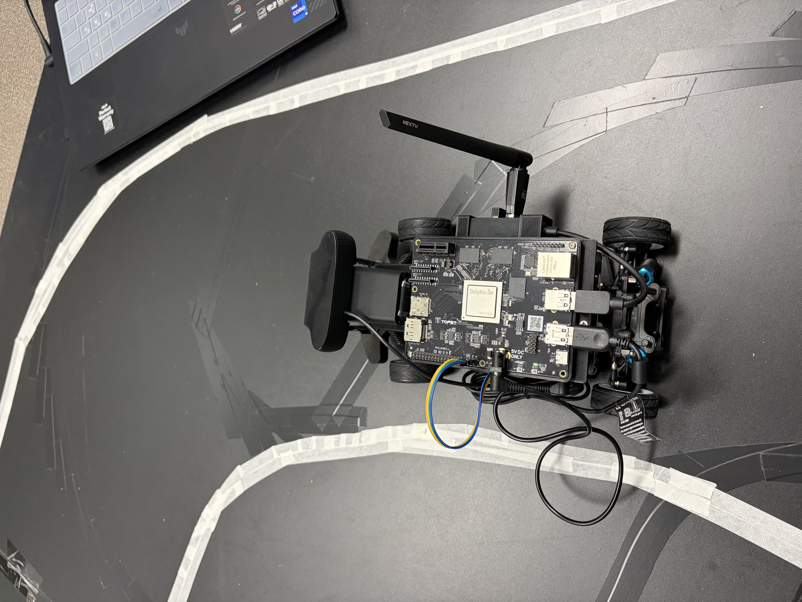
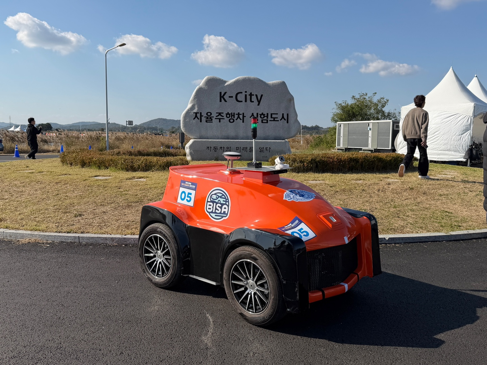
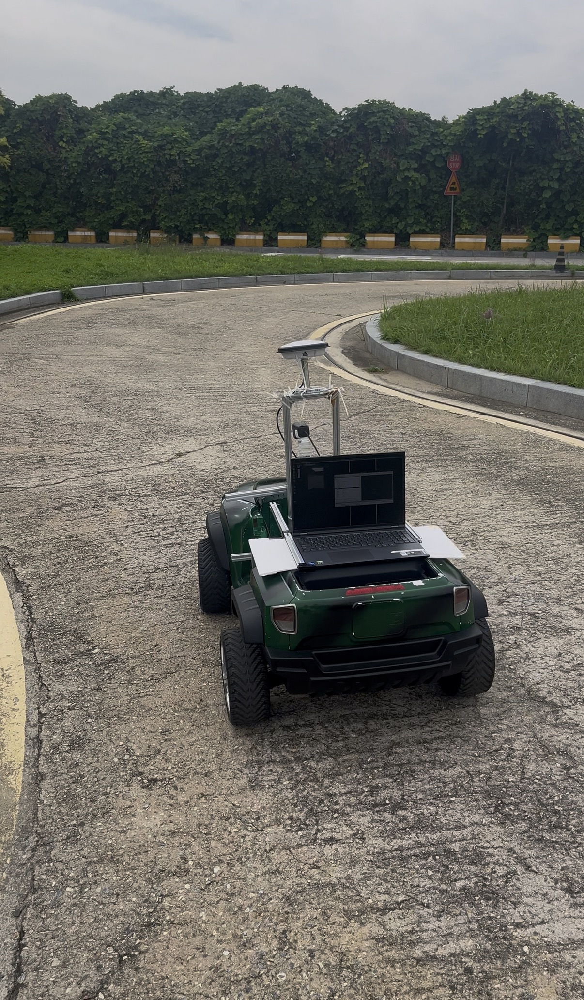
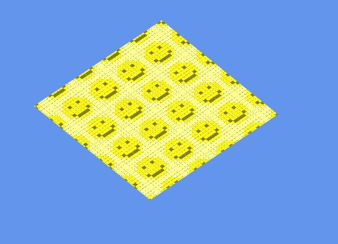
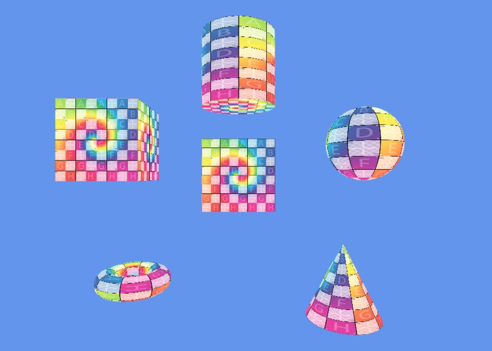
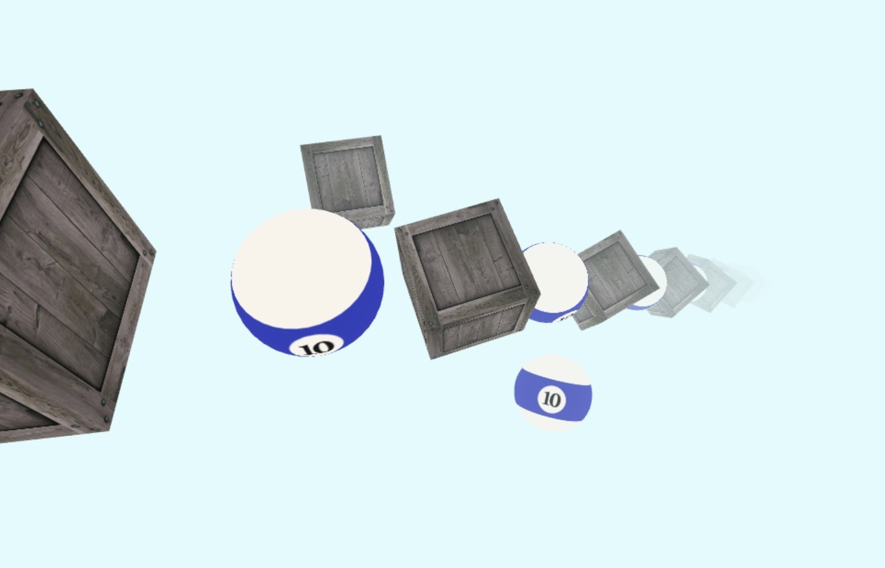
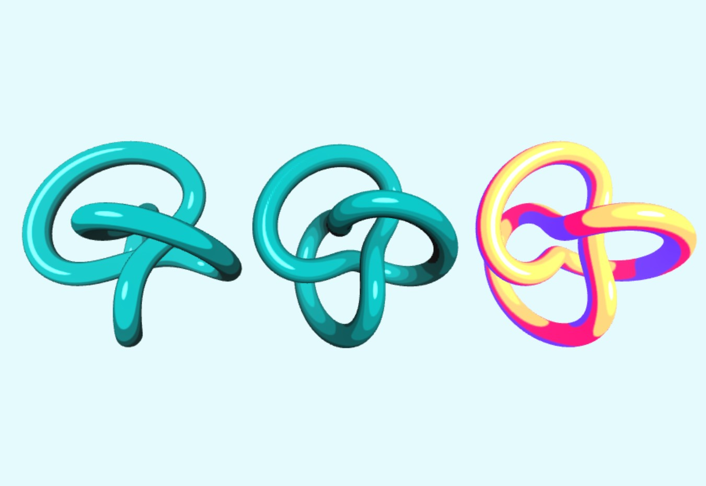
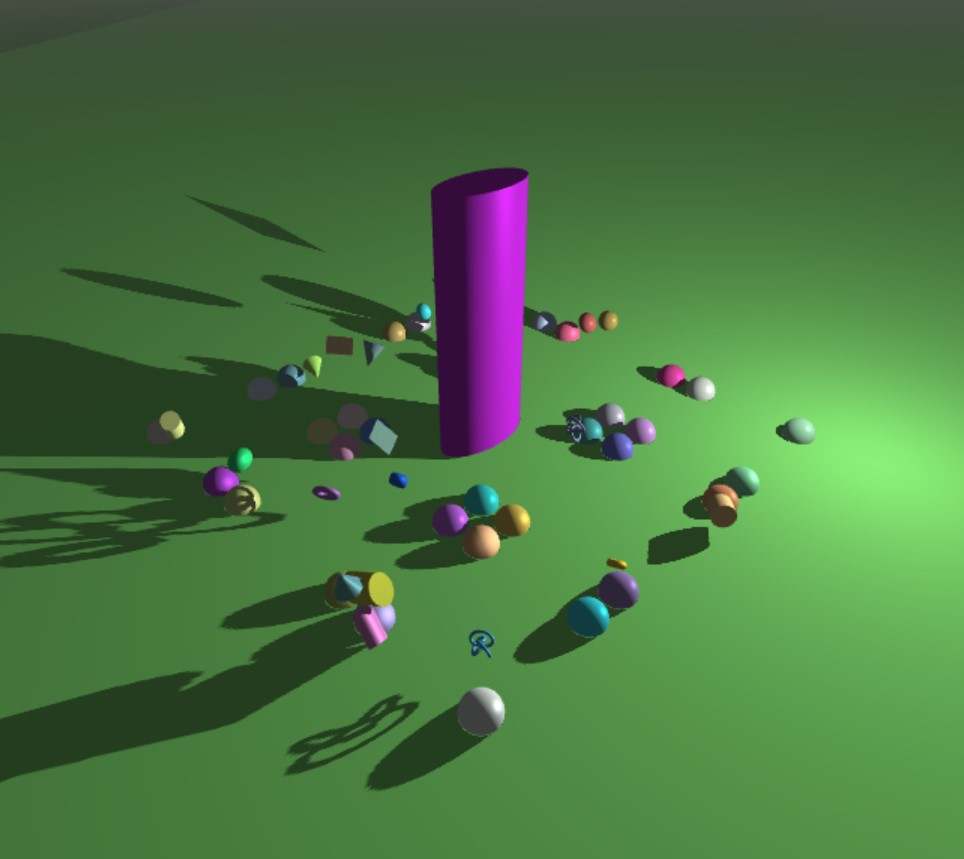
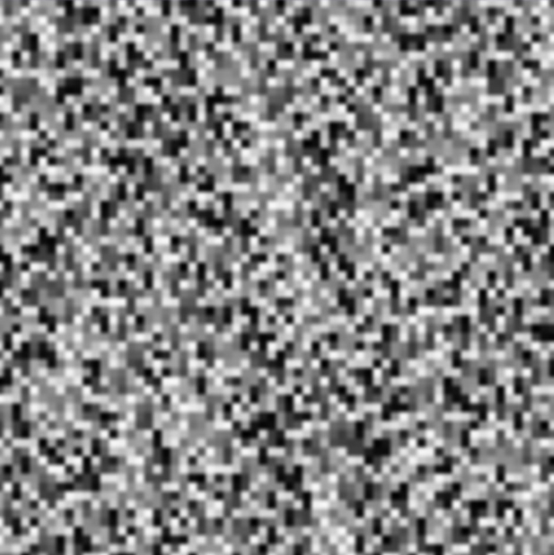
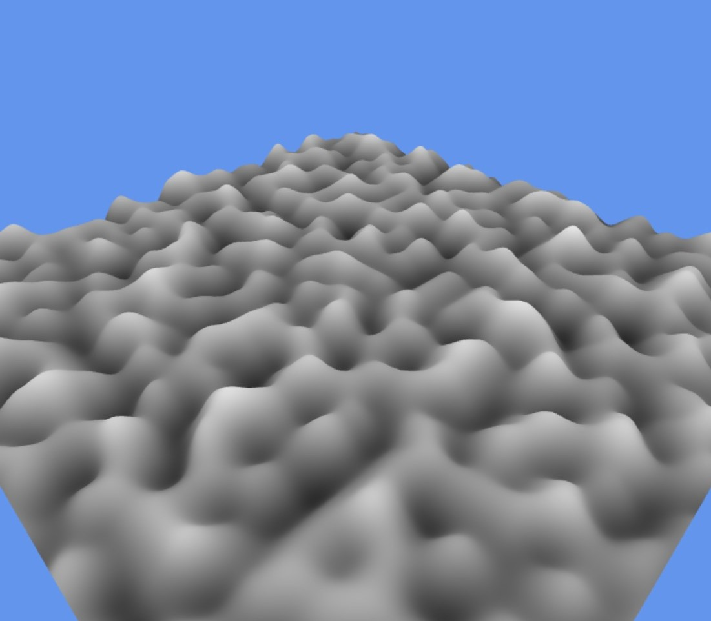

Vision-Only Driving System
ROS2 Humble
Vision-Only
Embedded Systems
Perception, planning, control, and sim-to-real field deployment.




Rendering foundations, shader effects, procedural geometry, and WebGL demos.








Visual recognition and retrieval systems built around practical object search.

Playable loops, gameplay systems, state flow, and team production practices.